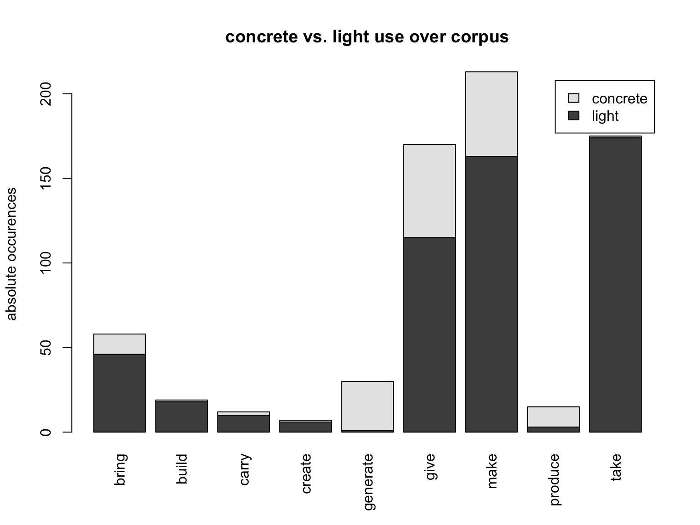

topic #6 folien. polysemous verbs with light and concrete senses.
stschwarz
2025-11-10 18:55:58.479506
term paper draft
essai of a replication study of Mehl (2021): “What we talk about when we talk about corpus frequency: The example of polysemous verbs with light and concrete senses”.
init
“If onomasiological frequency measurements do indeed correlate with elicitation tests, potential impact would be immense. Researchers would be able to examine onomasiological frequencies in spoken corpora rather than performing elicitation tests. That possibility would facilitate cognitive research into languages and varieties around the world, without the necessity of in situ psycholinguistic testing, and would also encourage the creation of more spoken corpora.” (Mehl (2021) p.23)
method
following corpus was used to determine frequencies:
Q.1: Santa Barbara corpus of spoken American English, (UCSB et al. (2005))
the corpus data was downloaded from: https://www.linguistics.ucsb.edu/sites/secure.lsit.ucsb.edu.ling.d7/files/sitefiles/research/SBC/SBCorpus.zip
exploring scripts:
- 14015.concrete-abstract_HA.R: creates corpus of downloaded .zip
- sbc-postag.R: postags the corpus
- get-freq-df.R: first evaluation
- collexemes-01.R: 2nd evaluation script
corpus sample
## scb id text lfd light alt
## 2974 3 242 % I wanted it to be home made Q . 2974 0 make
## 65343 57 123 ... It's gonna get messed up. 65343 NA a-other
## 9465 8 567 and then I didn't and I .. kept making like, 9465 1 make
## 67928 59 714 And he's really good at making out .. the budget. 67928 1 make
## 35078 30 612 ... God is continually .. building character. 35078 0 build
## 61913 53 604 and make the payroll, 61913 1 make
## 28500 24 25 .. Yeah. 28500 NA a-otherdistribution analysis
cf. (Mehl 2021, 11–14)
## make.ice.wr make.ice.sp take.ice.wr take.ice.sp give.ice.wr give.ice.sp take.sbc give.sbc make.sbc
## concrete 68 96 62 131 52 105 148 60 88
## light 321 353 85 79 167 227 462 249 475absolute distribution of lemmas over corpora. ICE data from study.

relative distribution of lemmas over corpora.
semantic alternatives to make
- includes alternatives to /make/ that Mehl defined in his study
- all occurences are counted
- Mehl contrasted only these alternate occurences which:
“are defined as those verbs that occur in the corpus with the same concrete direct objects as make, (take, and give) and with a roughly equivalent meaning.” (cf. Mehl (2021) p.13)
## bring build carry create generate give make produce take
## all.objects 46 18 10 6 1 115 163 3 174
## all.conc.obj 12 1 2 1 29 55 50 12 1
## SLOT1 SLOT2 fS1 fS2 OBS EXP ASSOC COLL.STR.LOGL SIGNIF
## 137 finish afghan 13 2 2 0 attr 28.51461 *****
## 654 Filled cookie 1 6 1 0 attr 15.81813 ****
## 924 create Adam 13 1 1 0 attr 14.17394 ***
## 928 create rift 13 1 1 0 attr 14.17394 ***
## 930 record Simpsons 13 1 1 0 attr 14.17394 ***
## 1337 shovel food 1 34 1 0 attr 12.20185 ***
## 1338 Unsweeten food 1 34 1 0 attr 12.20185 ***
## 1476 filling stuff 1 46 1 0 attr 11.58948 ***
## 1518 create cause 13 2 1 0 attr 11.40296 ***
## 1519 create committee 13 2 1 0 attr 11.40296 ***
## 1520 create condition 13 2 1 0 attr 11.40296 ***
## 1784 bake bread 5 7 1 0 attr 10.48243 **
## 1862 roll tamale 8 5 1 0 attr 10.19627 **
## 2626 record trip 13 8 1 0 attr 8.15687 **
## 3307 record game 13 16 1 0 attr 6.71671 **2nd approach collexeme evaluation
## SLOT1 SLOT2 fS1 fS2 OBS EXP ASSOC COLL.STR.LOGL SIGNIF
## 1 take care 334 33 32 1.5 attr 190.790 *****
## 17 make decision 279 10 9 0.4 attr 52.401 *****
## 18 make difference 279 13 10 0.5 attr 51.581 *****
## 37 take trick 334 10 8 0.5 attr 39.521 *****
## 42 make sense 279 12 8 0.5 attr 37.292 *****
## 43 take shower 334 6 6 0.3 attr 36.973 *****
## 62 make fudge 279 7 6 0.3 attr 33.490 *****
## 74 take look 334 10 7 0.5 attr 31.217 *****
## 82 give sticker 173 4 4 0.1 attr 29.934 *****
## 91 make money 279 74 15 2.9 attr 28.180 *****
## 96 build garage 25 5 3 0.0 attr 27.645 *****
## 100 make copy 279 14 7 0.5 attr 26.835 *****
## 107 make budget 279 4 4 0.2 attr 26.075 *****
## 110 take advantage 334 6 5 0.3 attr 25.483 *****
## 117 build dam 25 7 3 0.0 attr 24.826 *****
## 120 take space 334 4 4 0.2 attr 24.626 *****
## 121 take while 334 4 4 0.2 attr 24.626 *****
## 130 make noise 279 7 5 0.3 attr 24.390 *****
## 133 take bite 334 10 6 0.5 attr 23.886 *****
## 141 take picture 334 20 8 0.9 attr 23.536 *****
## 149 give try 173 3 3 0.1 attr 22.433 *****
## 150 give lesson 173 6 4 0.1 attr 22.391 *****
## 155 take class 334 16 7 0.7 attr 22.062 *****
## 287 carry mission 12 5 2 0.0 attr 19.226 ****
## 289 make fun 279 10 5 0.4 attr 19.136 ****
## 290 give shot 173 8 4 0.2 attr 19.033 ****
## 295 bring art 56 8 3 0.1 attr 18.801 ****
## 305 give measure 173 4 3 0.1 attr 17.982 ****
## 306 bring bottle 56 9 3 0.1 attr 17.943 ****
## 318 give idea 173 39 7 0.9 attr 17.292 ****
## 319 build character 25 4 2 0.0 attr 17.291 ****
## 400 carry chair 12 8 2 0.0 attr 16.967 ****
## 426 produce champion 3 1 1 0.0 attr 15.948 ****
## 490 bring deer 56 3 2 0.0 attr 15.701 ****
## 499 make report 279 8 4 0.3 attr 15.296 ****
## 567 build plant 25 6 2 0.0 attr 15.210 ****
## 569 make connection 279 4 3 0.2 attr 15.125 ***
## 570 make sound 279 4 3 0.2 attr 15.125 ***
## 575 give headach 173 2 2 0.0 attr 14.944 ***
## 576 give permission 173 2 2 0.0 attr 14.944 ***
## 577 give sanity 173 2 2 0.0 attr 14.944 ***
## 641 create rift 6 1 1 0.0 attr 14.360 ***
## 677 take punishment 334 4 3 0.2 attr 14.056 ***
## 756 take break 334 14 5 0.6 attr 13.389 ***
## 757 take year 334 14 5 0.6 attr 13.389 ***
## 760 build building 25 9 2 0.0 attr 13.333 ***
## 825 give answer 173 7 3 0.2 attr 13.063 ***
## 826 give call 173 7 3 0.2 attr 13.063 ***
## 827 make dingo 279 2 2 0.1 attr 13.024 ***
## 828 make living 279 2 2 0.1 attr 13.024 ***
## 829 make loan 279 2 2 0.1 attr 13.024 ***
## 830 make mess 279 2 2 0.1 attr 13.024 ***
## 831 make mistake 279 2 2 0.1 attr 13.024 ***
## 832 make progress 279 2 2 0.1 attr 13.024 ***
## 833 make quilt 279 2 2 0.1 attr 13.024 ***
## 836 make tamale 279 5 3 0.2 attr 12.972 ***
## 842 carry baggage 12 1 1 0.0 attr 12.883 ***
## 862 carry sho 12 1 1 0.0 attr 12.883 ***
## 944 take cut 334 2 2 0.1 attr 12.301 ***
## 945 take nap 334 2 2 0.1 attr 12.301 ***
## 1004 take square 334 5 3 0.2 attr 11.919 ***
## 1044 create cause 6 2 1 0.0 attr 11.589 ***
## 1045 create committee 6 2 1 0.0 attr 11.589 ***
## 1046 create condition 6 2 1 0.0 attr 11.589 ***
## 1053 create stress 6 2 1 0.0 attr 11.589 ***
## 1066 make pizza 279 6 3 0.2 attr 11.462 ***
## 1081 generate power 1 24 1 0.0 attr 11.453 ***
## 1108 build cofferdam 25 1 1 0.0 attr 11.370 ***
## 1115 build nest 25 1 1 0.0 attr 11.370 ***
## 1116 build podium 25 1 1 0.0 attr 11.370 ***
## 1118 build towers 25 1 1 0.0 attr 11.370 ***
## 1150 bring gift 56 7 2 0.1 attr 11.204 ***
## 1153 give antibiotic 173 3 2 0.1 attr 11.173 ***
## 1154 give notice 173 3 2 0.1 attr 11.173 ***
## 1417 produce report 3 8 1 0.0 attr 9.924 **
## 1493 bring action 56 1 1 0.0 attr 9.734 **
## 1494 bring beauty 56 1 1 0.0 attr 9.734 **
## 1495 bring coupon 56 1 1 0.0 attr 9.734 **
## 1496 bring extinction 56 1 1 0.0 attr 9.734 **
## 1497 bring inspector 56 1 1 0.0 attr 9.734 **
## 1498 bring joy 56 1 1 0.0 attr 9.734 **
## 1499 bring politics 56 1 1 0.0 attr 9.734 **
## 1500 bring semiload 56 1 1 0.0 attr 9.734 **
## 1501 bring spikenard 56 1 1 0.0 attr 9.734 **
## 1546 give character 173 4 2 0.1 attr 9.495 **
## 1579 make statement 279 8 3 0.3 attr 9.351 **
## 1588 make arrangement 279 3 2 0.1 attr 9.283 **
## 1589 make cartilage 279 3 2 0.1 attr 9.283 **
## 1590 make ceviche 279 3 2 0.1 attr 9.283 **
## 1591 make comment 279 3 2 0.1 attr 9.283 **
## 1592 make humor 279 3 2 0.1 attr 9.283 **
## 1593 make pan 279 3 2 0.1 attr 9.283 **
## 1764 produce heat 3 14 1 0.0 attr 8.750 **
## 1798 build library 25 2 1 0.0 attr 8.604 **
## 1804 take off 334 3 2 0.1 attr 8.577 **
## 1805 take shelf 334 3 2 0.1 attr 8.577 **
## 1806 take top 334 3 2 0.1 attr 8.577 **
## 1807 take wire 334 3 2 0.1 attr 8.577 **
## 1827 give break 173 14 3 0.3 attr 8.410 **
## 1837 carry paperwork 12 4 1 0.0 attr 8.394 **
## 1850 give grace 173 5 2 0.1 attr 8.358 **
## 1851 give history 173 5 2 0.1 attr 8.358 **
## 1852 give scale 173 5 2 0.1 attr 8.358 **
## 1857 take trip 334 8 3 0.4 attr 8.346 **
## 1949 take lunch 334 24 5 1.1 attr 8.011 **
## 1976 give name 173 29 4 0.7 attr 7.853 **
## 2032 make turn 279 4 2 0.2 attr 7.635 **
## 2067 give backrub 173 1 1 0.0 attr 7.466 **
## 2068 give brushoff 173 1 1 0.0 attr 7.466 **
## 2069 give bump 173 1 1 0.0 attr 7.466 **
## 2070 give credit 173 1 1 0.0 attr 7.466 **
## [ reached 'max' / getOption("max.print") -- omitted 425 rows ]semasiological: T-score of near synonymes to make
semasiological: T-score of near synonymes to take
semasiological: p of near synonymes to make
semasiological: p of near synonymes to take